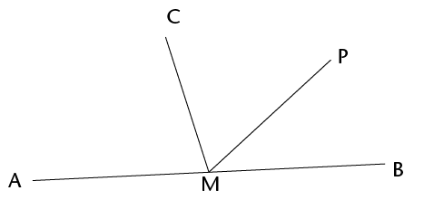
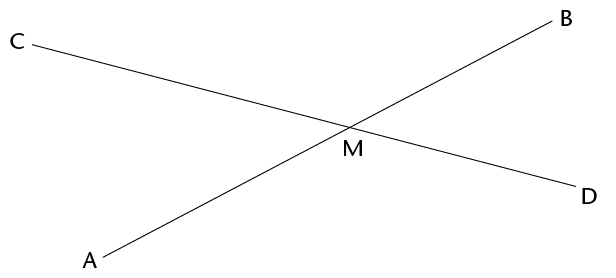
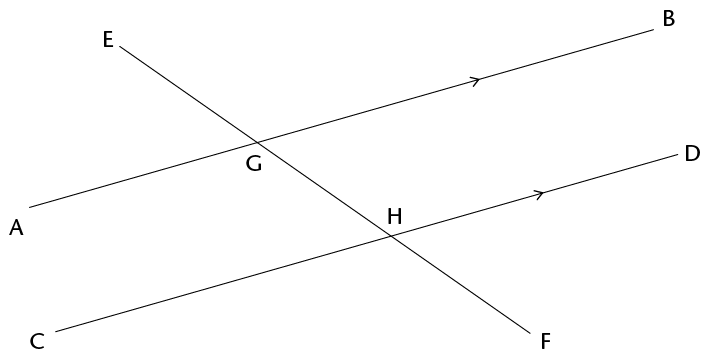

<div class="container">
  <div id="contents" class="col-md-12 main-content"><h1 xmlns="http://www.w3.org/1999/xhtml" id="toc-id-0">Meetkunde van reguit lyne</h1>

 <p xmlns="http://www.w3.org/1999/xhtml" class="Body-opener-no-indent">In Graad 8 het jy verbande tussen hoeke op reguit lyne geïdentifiseer. In hierdie hoofstuk sal
jy al die verbande tussen hoeke hersien en duidelike beskrywings van hulle neerskryf.</p>

    <h2 xmlns="http://www.w3.org/1999/xhtml" id="toc-id-1">Verbande tussen hoeke</h2>

    <p xmlns="http://www.w3.org/1999/xhtml" class="Body-no-indent">Onthou dat 360° een volle rotasie is.</p>

    <p xmlns="http://www.w3.org/1999/xhtml" class="Body">As jy na iets kyk en dan heeltemal in die rondte draai sodat jy weer daarna kyk, het jy
deur ’n hoek van 360°. gedraai. As jy net halfpad omdraai sodat jy na iets kyk wat agter
jou rug was, het jy deur ’n hoek van
    180° gedraai.</p>

    <ol xmlns="http://www.w3.org/1999/xhtml"><li class="Body-investigation">Beantwoord die vrae oor die figuur.

    <p class="Body-investigation-hanging"><span></span> </p>
<ol><li class="ques-a-">Is \(F\hat{O}D\) kleiner of groter as ’n regte
hoek?<hr/></li>
    <li class="ques-a-">Is \(F\hat{O}E\) kleiner of groter as ’n regte
hoek?<hr/></li>
    </ol>
    <p class="Body-investigation">In die figuur hier bo is \(F\hat{O}D + F\hat{O}C\)= die helfte van ’n omwenteling =
    180\(^\circ\).</p>

    <div class="note">
      <p class="Body-content-no-indent">Die som van die hoeke op ’n reguit lyn is 180\(^\circ\).</p>

      <p class="Body-content-no-indent">Wanneer die som van hoeke
      180\(^\circ\) is, word die hoeke
      <b>supplementêr</b> genoem.</p>
    </div>
</li>
    <li class="Body-investigation-hanging"> \(C\hat{M}A\) in die figuur hier regs is 75\(^\circ\).
    AMB is ’n reguit lyn.

    <p class="Body-investigation"><span></span></p>
<ol><li class="ques-a--2-space-below">Hoe groot is \(C\hat{M}B\)?<hr/></li>
    <li class="ques-a-">Waarom sê jy so?<hr/></li>
    </ol></li><li class="Body-investigation">\(P\hat{M}B\) in die figuur in vraag 2 is
    40\(^\circ\).<ol><li class="Body-investigation">Hoe groot is \(C\hat{M}P\)
    <hr/></li><li class="Body-investigation">Verduidelik jou redenasie.<hr/></li>
    </ol></li><li class="Body-investigation-spaced">In die figuur hier onder is AMB ’n reguit lyn en \(A\hat{M}C\) and \(B\hat{M}C\) is ewe groot.

<ol><li class="ques-a--2-space-below">Hoe groot is hierdie hoeke?
    <hr/></li><li class="ques-a-">Hoe weet jy dit?<hr/></li>
</ol><div class="frame-35"></div>
    <hr/><div class="note">
      <p class="Body-content-no-indent">Wanneer een lyn twee gelyke hoeke vorm waar dit ’n
ander lyn ontmoet, sê ons die twee lyne is <b>loodreg</b> op mekaar.</p>
<p>Omdat die twee gelyke hoeke hoeke op ’n reguit lyn
is, is hul som 180°, dus is elke hoek 90°.
</p>

    </div>

    </li><li class="Body-investigation">In die figuur hier onder sny die lyne AB en CD mekaar in punt M.

    <p class="Body-investigation"><span></span></p> 
<div class="aside">
      <p class="Body-box-no-indent">In hierdie hoofstuk moet jy
goeie redes gee vir elke
bewering wat jy maak.</p>
</div>
<ol><li class="ques-a-">Lyk dit asof \(C\hat{M}A\) en \(B\hat{M}D\) ewe groot is?
    <hr/></li><li class="ques-a-">Kan jy verduidelik waarom hulle ewe groot is?<hr/></li>
    <li class="ques-a-">Waaraan is \(C\hat{M}A\) +
\(D\hat{M}A\) geluk?
   ____________

    Waarom sê jy so?
    <hr/></li>
    <li class="ques-a-">Wat is \(C\hat{M}A\) +
\(C\hat{M}B\)?  ____________

    Waarom sê jy so?
    <hr/></li>

    <li class="ques-a--2-space-below para-style-override-13">Is dit waar dat \(C\hat{M}A\) + \(D\hat{M}A\)  =  \(C\hat{M}A\) + \(C\hat{M}B\)<hr/></li>
    <li class="ques-a--2-space-below"> Watter hoek kom aan albei kante van die vergelyking in (e) voor?<hr/></li>
    </ol></li>


    <li class="Body-investigation-hanging"> Beskou jou antwoorde op vraag 5(c) tot 5(e) sorgvuldig.

    <p class="Body-investigation-hanging">Probeer nou jou waarneming in vraag 5(a) verduidelik.</p>
    <hr/></li><li class="Body-investigation-hanging">In die figuur hier onder sny AB en CD in M. Vier hoeke word gevorm. CMB en
     AMD word <b>regoorstaande</b> hoeke genoem.
    CMA en BMD is ook <b>regoorstaande</b> hoeke.

    <div class="note">
      <p class="Body-content-no-indent">Wanneer twee reguit lyne sny, is die regoorstaande
hoeke gelyk.</p>
    </div>

    <p class="ques-a--2-space-below"><span></span> </p>
<ol><li class="ques-a--2-space-below">As \(B\hat{M}C  =
    125 {^\circ}\), hoe groot is AMD?
    <hr/></li><li class="ques-a--2-space-below">Waarom sê jy so?<hr/></li>
    </ol></li>
</ol>

    <h3 xmlns="http://www.w3.org/1999/xhtml" class="Head-investigation">Lyne en hoeke</h3>

    <div xmlns="http://www.w3.org/1999/xhtml" class="note">
      <p class="Body-content-no-indent">’n Lyn wat ander lyne sny, word ’n <b>snylyn</b> genoem.</p>
    </div>

    <p xmlns="http://www.w3.org/1999/xhtml" class="Body-investigation"><span></span> </p>

    <p xmlns="http://www.w3.org/1999/xhtml" class="Body-investigation">In die patroon hier bo is AB ewewydig aan CD
en EF || GH || KB || LD</p>
<ol xmlns="http://www.w3.org/1999/xhtml"><li class="Body-investigation-hanging">
Hoeke a, b, c, d en e is <b>ooreenkomstige hoeke</b>. Lyk dit asof die
ooreenkomstige
hoeke ewe groot is?
<hr/></li><li class="Body-investigation-hanging"> Ondersoek of die ooreenkomstige hoeke ewe groot is deur natrekpapier te gebruik.
Trek die hoek na wat jy met ander hoeke wil vergelyk en plaas dit bo-op die ander
hoeke om uit te vind of hulle ewe groot is. Wat merk jy op?
    <hr/></li><li class="Body-investigation-hanging">Hoeke \(f\), \(h\), \(j\), \(m\) en \(n\) is ook
ooreenkomstige hoeke. Identifiseer al die ander groepe
ooreenkomstige hoeke in die patroon
?<hr/></li>
<li class="Body-investigation-hanging">Beskryf die posisie van ooreenkomstige hoeke wat gevorm word wanneer ’n snylyn
ander lyne sny.<hr/></li>
    <li class="Body-investigation-hanging">Die volgende is pare <b>verwisselende
hoeke</b>:\( g\) en \(o\); \(j\) en \(s\); en \(k\) en \(r\). Lyk dit asof
hierdie hoeke ewe groot is?<hr/></li><li class="Body-investigation-hanging"><p>Ondersoek of die verwisselende
hoeke ewe groot is deur natrekpapier te gebruik.
Trek die hoek na wat jy wil vergelyk en plaas dit bo-op die ander hoek om uit te
vind
of hulle ewe groot is. Wat merk jy op?
</p><hr/></li>

    <li class="Body-investigation">Identifiseer nog twee pare verwisselende hoeke.<hr/></li>
<li class="Body-investigation-hanging">Gee ’n duidelike beskrywing van die relatiewe posisie van verwisselende hoeke wat
gevorm word wanneer ’n snylyn ander lyne sny.<hr/></li>
    <li class="Body-investigation-hanging">Het jy iets opgemerk omtrent party van die pare ooreenkomstige hoeke toe jy die
ondersoek in vraag 6 gedoen het? Beskryf jou bevinding.<hr/></li>
    <li class="Body-investigation-hanging">Hoeke \(f\) en \(o\); \(i\) en \(q\); en \(k\) en \(s\) is
almal pare <b>ko-binnehoeke</b>. Identifiseer nog drie pare
ko-binnehoeke in die patroon.</li>

</ol><div xmlns="http://www.w3.org/1999/xhtml" class="note">
      <p class="Body-content-no-indent">Die hoeke in dieselfde relatiewe posisie by elke snyding
waar ’n reguit lyn twee ander lyne kruis, word <b>ooreenkomstige hoeke</b>
genoem.</p>
<p>
 Hoeke aan verskillende kante van ’n snylyn en tussen
twee ander lyne word <b>verwisselende hoeke</b> genoem.</p><p>
Hoeke aan dieselfde kant van die snylyn en tussen
twee ander lyne word <b>ko-binnehoeke</b> genoem.
</p>
    </div>
    <div xmlns="http://www.w3.org/1999/xhtml" class="frame-35"></div>
    <h3 xmlns="http://www.w3.org/1999/xhtml" class="Head-investigation">Hoeke deur ewewydige lyne gevorm</h3>

    <h4 xmlns="http://www.w3.org/1999/xhtml" class="Head-C">Ooreenkomstige hoeke</h4>

    <p xmlns="http://www.w3.org/1999/xhtml" class="Body-no-indent">Die lyne AB en CD hier onder ontmoet nooit nie. Jy weet reeds dat lyne wat nooit
ontmoet nie en ’n vaste afstand van mekaar af is, ewewydige lyne genoem word. Ons
skryf AB \(||\)
    CD.</p>

    <div xmlns="http://www.w3.org/1999/xhtml" class="note">
      <p class="Body-content-no-indent">Ewewydige lyne het dieselfde rigting, d.w.s. hulle
vorm <b>gelyke ooreenkomstige hoeke</b> met enige
lyn wat hulle sny.</p>
    </div>

    <p xmlns="http://www.w3.org/1999/xhtml" class="Body-no-indent"><span></span> </p>

    <p xmlns="http://www.w3.org/1999/xhtml" class="Body-no-indent">Die lyn EF sny AB by G en CD by H.</p>

    <p xmlns="http://www.w3.org/1999/xhtml" class="Body-no-indent">EF is ’n snylyn wat ewewydige lyne AB en CD sny.</p>

<ol xmlns="http://www.w3.org/1999/xhtml"><li class="ques-a-">
	<ol><li>Beskou \(E\hat{G}A\) en
    \(E\hat{H}C\) in die figuur hier bo sorgvuldig. Hulle
word <span class="Body-bold char-style-override-3"><b>ooreenkomstige hoeke</b></span> genoem.
    Lyk dit asof hulle ewe groot is?
    <hr/></li><li class="ques-a-">Meet die twee hoeke om te kontroleer of hulle ewe groot is. Wat merk jy op?<hr/></li>
    </ol></li><li class="Body-investigation-hanging">Gestel \(E\hat{G}A\) en \(E\hat{H}C\) is regtig ewe groot. Sal \(E\hat{G}B\) en \(E\hat{H}D\) dan ook ewe groot wees? Gee redes om jou antwoord te ondersteun.<hr/></li></ol> 
    <hr xmlns="http://www.w3.org/1999/xhtml"/><div xmlns="http://www.w3.org/1999/xhtml" class="note">
      <p class="Body-content-no-indent">Wanneer twee <b>ewewydige</b> lyne deur
’n snylyn gesny
word, is die ooreenkomstige hoeke ewe groot.</p>
    </div>

    <h4 xmlns="http://www.w3.org/1999/xhtml" class="Head-C">Verwisselende hoeke</h4>

    <p xmlns="http://www.w3.org/1999/xhtml" class="Body-no-indent"> \(B\hat{G}F\) en \(C\hat{H}E\) hier onder word <b>verwisselende hoeke</b> genoem. Hulle is aan

teenoorgestelde kante van die snylyn.</p>

    <p xmlns="http://www.w3.org/1999/xhtml" class="No-Paragraph-Style para-style-override-28">
    <span></span> </p>
<ol xmlns="http://www.w3.org/1999/xhtml">
    <li class="Body-investigation" value="3">Dink jy die hoeke
\(A\hat{G}F\) en
    \(D\hat{H}E\) moet ook verwisselende hoeke genoem
word?<hr/></li>
    <li class="Body-investigation-hanging">Dink jy verwisselende hoeke is ewe groot? Ondersoek deur natrekpapier soos vroeër
te gebruik of meet die hoeke akkuraat met jou gradeboog.
	 <p class="Body-investigation-hanging">Wat merk jy op?</p>
   <hr/><div class="note">
      <p class="Body-content-no-indent">Wanneer <b>ewewydige</b> lyne deur ’n
snylyn gesny
word, is die verwisselende hoeke ewe groot.</p>
    </div>
</li>

    
   


    <li class="Body-investigation-hanging">Probeer verduidelik waarom verwisselende hoeke gelyk is wanneer die lyne wat gesny
word ewewydig is. Hou in gedagte dat ooreenkomstige hoeke ewe groot is. <hr/></li>
     
  
    <li class="Body-investigation-hanging">  <p class="Body-no-indent">Deur die volgende vrae te beantwoord behoort jy te kan sien hoe jy kan verduidelik
waarom verwisselende hoeke gelyk is as ewewydige lyne deur ’n snylyn gesny word.</p>
Is
\(B\hat{G}H\) en
\(D\hat{H}F\) in die figuur ooreenkomstige
hoeke?<hr/>    <hr/><p class="Body-investigation-hanging">Wat weet jy van ooreenkomstige hoeke?</p>
    <hr/><p class="ques-a-"><span></span> </p></li>


    <li class="ques-a-">
<ol><li>Wat kan jy sê van \(B\hat{G}H\) + \(A\hat{G}H\) Gee ’n rede<hr/></li>
   

    <li class="ques-a-"> Wat kan jy sê van  \(D\hat{H}G\) + \(C\hat{H}G\)? Gee ’n rede.<hr/></li>
    <li class="ques-a-">Is dit waar dat \(B\hat{G}H\) + \(A\hat{G}H\) = \(D\hat{H}G\) + \(C\hat{H}G\)? Verduidelik.<hr/></li>
    <li class="ques-a-">Sal die vergelyking in (c) steeds waar wees as jy \(B\hat{G}H\) aan die linkerkant met \(C\hat{H}G\) vervang?<hr/></li>
    </ol></li> 
<li class="Body-investigation-hanging">Beskou jou werk in vraag 7 sorgvuldig en skryf ’n verduideliking van waarom
verwisselende hoeke gelyk is wanneer twee ewewydige lyne deur ’n snylyn gesny word.    <hr/><h4 class="Head-C">Ko-binnehoeke</h4>

    <p class="Body-no-indent para-style-override-7">Die hoeke \(A\hat{G}H\) en \(C\hat{H}G\) in die figuur hier onder word
    <b>Ko-binnehoeke</b> genoem. Hulle is aan
dieselfde kant van die snylyn..</p>

    <div class="aside">
      <p class="Body-box-no-indent">“ko-” beteken saam.</p>

      
    </div>


    <p class="Body"><span></span> </p></li>


    <li class="ques-a-">
<ol><li> Wat weet jy van \(C\hat{H}G\) + \(D\hat{H}G\)? Verduidelik.<hr/></li>
    <li class="ques-a-">Wat weet jy van \(B\hat{G}H\) + \(A\hat{G}H\)? Verduidelik.<hr/></li>
    <li class="ques-a-">Wat weet jy van \(B\hat{G}H\)+ \(C\hat{H}G\)? Verduidelik.<hr/></li>
    <li class="ques-a-">Watter gevolgtrekking kan jy maak oor \(A\hat{G}H\) + \(C\hat{H}G\)?</li>


    </ol>    <p class="ques-a-">Gee gedetailleerde redes
    vir jou gevolgtrekking.</p></li></ol>


    <div xmlns="http://www.w3.org/1999/xhtml" class="note">
      <p class="Body-content-no-indent">Wanneer twee ewewydige lyne deur ’n snylyn gesny
word, is die som van twee ko-binnehoeke
      180\(^\circ\). ’n Ander manier om dit te sê, is dat die twee
ko-binnehoeke <b>supplementêr</b>is.</p>
    </div>

    <h2 xmlns="http://www.w3.org/1999/xhtml" id="toc-id-2">Identifiseer en benoem hoeke</h2>

<ol xmlns="http://www.w3.org/1999/xhtml"><li class="Body-investigation">In die figuur hier onder is die lyn RF loodreg op AB.
	
    <p class="Body-investigation"><span></span> </p>
<ol><li class="ques-a-">Is RF ook loodreg op CD? Regverdig jou antwoord.<hr/></li>
    <li class="ques-a-"> Noem vier pare supplementêre hoeke in die figuur. Sê in elke geval hoe jy weet
	
dat die hoeke supplementêr is.<hr/></li>
    <li class="ques-a-"> Noem vier pare ko-binnehoeke in die figuur.<hr/></li>
    <li class="ques-a-"> Noem vier pare ooreenkomstige hoeke in die figuur<hr/></li>
    <li class="ques-a-"> Noem vier pare verwisselende hoeke in die figuur.<hr/></li>
    </ol></li>
<li class="Body-investigation">Daar word nou vir jou gegee dat AB en CD in die
figuur hier onder ewewydig is.

<span></span>
<ol><li class="ques-a-">Indien dit gegee word dat RF loodreg op AB is, sal RF
ook loodreg wees op CD?
	
Regverdig jou antwoord.<hr/></li>
    <li class="ques-a-">Noem al die pare supplementêre hoeke in die figuur. Sê in elke geval hoe jy weet
	
dat die hoeke supplementêr is.<hr/></li>
    <li class="ques-a-">Gestel \(E\hat{G}A\)  = <span class="char-style-override-9">x</span>. Gee die grootte van soveel hoeke in die figuur as wat jy kan in terme van <span class="char-style-override-9">x</span>. Gee elke keer ’n rede vir jou antwoord.<hr/></li>
</ol></li></ol>
    

   
    <h2 xmlns="http://www.w3.org/1999/xhtml" id="toc-id-3">Los probleme op</h2>
<ol xmlns="http://www.w3.org/1999/xhtml"><li class="Body-investigation-hanging">Lynstukke AB en CD in die figuur hier onder is
ewewydig. EF en IJ is ook ewewydig. Merk hierdie
feite op die figuur en beantwoord dan die vrae.

    <div class="aside">
      <p class="Body-box-no-indent">Wanneer jy probleme in
meetkunde oplos, kan jy
’n snelskrifmanier gebruik
om jou redes te skryf. As
twee hoeke byvoorbeeld
ewe groot is omdat hulle
ooreenkomstige hoeke is, kan
jy (corr <span class="char-style-override-24">\(\angle\)</span>e, AB
      \(||\) CD) as
die rede skryf.</p></div>

    <p class="Body-investigation-hanging"><span></span> </p>
<ol><li class="ques-a-">Noem vyf hoeke in die figuur wat gelyk is aan \(G\hat{H}D\) .Gee ’n rede vir elkeen van
    jou antwoorde.<hr/></li>
    <li class="ques-a-">Noem al die hoeke in die figuur wat gelyk is aan \(A\hat{G}H\) . Gee ’n rede vir elkeen van
   jou antwoorde.<hr/></li>
</ol></li>
<li class="Body-investigation-hanging">AB en CD in die figuur hier onder is ewewydig. EF en IJ is ook ewewydig. \(N\hat{M}B\)  = 80\(^\circ\) and \(J\hat{L}F\)  = 40\(^\circ\).    <p class="Body"><span></span> </p>

    <p class="ques-a-">Bepaal die grootte van soveel hoeke in die figuur as wat jy kan en gee redes.</p></li>


    <li class="Body-investigation-hanging">In die figuur hier onder is
    AB \(||\) CD; EF \(||\) AB; JR
    \(||\) GH. \(P\hat{M}N\)  = 60\(^\circ\), \(R\hat{N}D\)  = 50\(^\circ\).
<p class="Body para-style-override-22"><span></span> </p>

<ol>
    <li class="ques-a-">Bepaal die grootte van soveel hoeke in die figuur as wat jy kan en gee redes.<hr/></li>
    <li class="ques-a-">Is EF en CD ewewydig? Gee redes vir jou antwoord.<hr/></li>
    </ol></li></ol>


  </div>
</div>